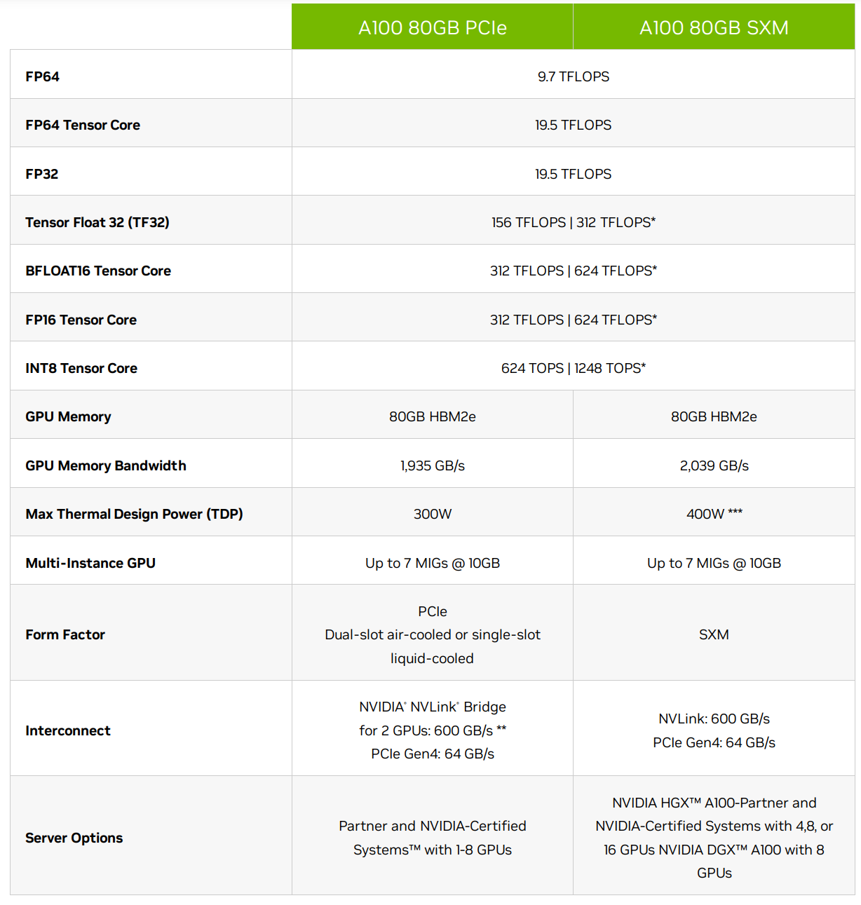

Accelerators
XXX: This chapter is a super-early WIP
Compute accelerators are the workhorses of the ML training. At the beginning there were just GPUs. But now there are also TPUs, IPUs, FPGAs, HPUs, QPUs, RDUs and more are being invented.
There exist two main ML workloads - training and inference. There is also the finetuning workload which is usually the same as training, unless a much lighter LORA-style finetuning is performed. The latter requires significantly fewer resources and time than normal finetuning.
In language models during inference the generation is performed in a sequence - one token at a time. So it has to repeat the same forward call thousands of times one smallish matmul (matrix multiplication or GEMM) at a time. And this can be done on either an accelerator, like GPU, or some of the most recent CPUs, that can handle inference quite efficiently.
During training the whole sequence length is processed in one huge matmul operation. So if the sequence length is 4k long, the training of the same model will require a compute unit that can handle 4k times more operations than inference and do it fast. Accelerators excel at this task. In fact the larger the matrices they have to multiply, the more efficient the compute.
The other computational difference is that while both training and inference have to perform the same total amount of matmuls in the forward pass, in the backward pass, which is only done for training, an additional 2x times of matmuls is done to calculate the gradients with regards to inputs and weights. And an additional forward is performed if activations recomputation is used. Therefore the training process requires at 3-4x more matmuls than inference.
Subsections
Bird’s eye view on the high end accelerator reality
While this might be changing in the future, unlike the consumer GPU market, as of this writing there aren’t that many high end accelerators, and if you rent on the cloud, most providers will have more or less the same few GPUs to offer.
GPUs: - As of today, ML clouds/HPCs started transitioning from NVIDIA A100s to H100s and this is going to take some months due to the usual shortage of NVIDIA GPUs. - AMD’s MI250 started popping up here and there, but it’s unclear when it’ll be easy to access those. From a recent discussion with an AMD representative MI300 is not planned to be in general availability until some time in 2025, though some HPCs already plan to get them some time in 2024.
HPU: - Intel’s Gaudi2 are starting to slowly emerge on Intel’s cloud
IPU: - And there is Graphcore with their IPU offering. You can try these out in Paperspace through their cloud notebooks.
TPU: - Google’s TPUs are, of course, available but they aren’t the most desirable accelerators because you can only rent them, and the software isn’t quite easily convertible between GPUs and TPUs, and so many (most?) developers remain in the GPU land, since they don’t want to be locked into a hardware which is a Google monopoly.
Pods and racks: - Cerebras’ WaferScale Engine (WSE) - SambaNova’s DataScale - dozens of different pod and rack configs that compose the aforementioned GPUs with super-fast interconnects.
That’s about it as Q4-2023.
Glossary
- CPU: Central Processing Unit
- FPGA: Field Programmable Gate Arrays
- GPU: Graphics Processing Unit
- HBM: High Bandwidth Memory
- HPC: High-performance Computing
- HPU: Habana Gaudi AI Processor Unit
- IPU: Intelligence Processing Unit
- MME: Matrix Multiplication Engine
- QPU: Quantum Processing Unit
- RDU: Reconfigurable Dataflow Unit
- TPU: Tensor Processing Unit
The most important thing to understand
I will make the following statement multiple times in this book - and that it’s not enough to buy/rent the most expensive accelerators and expect a high return on investment (ROI).
The two metrics for a high ROI for ML training are: 1. the speed at which the training will finish, because if the training takes 2-3x longer than planned, your model could become irrelevant before it was released - time is everything in the current super-competitive ML market. 2. the total $$ spent to train the model, because if the training takes 2-3x longer than planned, you will end up spending 2-3x times more.
Unless the rest of the purchased/rented hardware isn’t chosen carefully to match the required workload chances are very high that the accelerators will idle a lot and both time and $$ will be lost. The most critical component is network, then storage, and the least critical ones are (CPU and CPU memory).
If the compute is rented one usually doesn’t have the freedom to choose - the hardware is either set in stone or some components might be replaceable but with not too many choices. Thus there are times when the chosen cloud provider doesn’t provide a sufficiently well matched hardware, in which case it’s best to seek out a different provider.
If you purchase your servers then I recommend to perform a very indepth due diligence before buying.
Besides hardware, you, of course, need software that can efficiently deploy the hardware.
We will discuss both the hardware and the software aspects in various chapters of this book. You may want to start here and here.
What Accelerator characteristics do we care for
Let’s use the NVIDIA A100 spec as a reference point in the following sections.

TFLOPS
As mentioned earlier most of the work that ML training and inference do is matrix multiplication. If you remember your algebra matrix multiplication is made of many multiplications followed by summation. Each of these computations can be counted and define how many of these operations can be performed by the chip in a single seconds.
This is one of the key characteristics that the accelerators are judged by. The term TFLOPS defines how many trillions of FloatingPointOperations the chip can perform in a second. The more the better. There is a different definition for different data types. For example, here are a few entries for A100:
| Data type | TFLOPS | w/ Sparsity |
|---|---|---|
| FP32 | 19.5 | n/a |
| Tensor Float 32 (TF32) | 156 | 312 |
| BFLOAT16 Tensor Core | 312 | 624 |
| FP16 Tensor Core | 312 | 624 |
| INT8 Tensor Core | 624 | 1248 |
footnote: INT8 is measured in TeraOperations as it’s not a floating operation.
footnote: the term FLOPS could mean either the total number of FloatingPointOperations, e.g. when counting how many FLOPS a single Transformer iteration takes, and it could also mean FloatingPointOperations per second - so watch out for the context. When you read an accelerator spec it’s almost always a per second definition. When model architectures are discussed it’s usually just the total number of FloatingPointOperations.
So you can see that int8 is 2x faster than bf16 which in turn is 2x faster than tf32.
Moreover, the TFLOPs depend on the matrices size as can be seen from this table:

As you can see the difference in performance is non-linear due to the tile and wave quantization effects.
Let’s look at the TFLOPS specs across the high end accelerators:
| Accelerator / TFLOPS | fp32 | fp16 | fp8 | int8 |
|---|---|---|---|---|
| NVIDIA A100 SXM | 19.5 | 312 | 624 | 624 |
| AMD MI250 | 45.3 | 362 | X | 362 |
| AMD MI250X | 47.9 | 383 | X | 383 |
| NVIDIA H100 SXM | 67.0 | 989 | 1979 | 1979 |
| NVIDIA H100 PCIe | 51.0 | 756 | 1513 | 1513 |
| NVIDIA H100 dual NVL | 134.0 | 989 | 3958 | 3958 |
| AMD MI300 | ? | ? | ? | ? |
- Intel Gaudi2 doesn’t plan to publish TFLOPS specs as of this writing
Achievable peak TFLOPS
The problem with the advertised peak TFLOPS is that they are very theoretical and can’t be achieved in practice even if all the perfect conditions have been provided. Each accelerator has its own realistic TFLOPS which is not advertised and there are anecdotal community reports that do their best to find the actual best value, but I’m yet to find any official reports.
If you find solid reports (papers?) showing the actual TFLOPS one can expect from one or more of the high end accelerators discussed in this chapter please kindly submit a PR with this information. The key is to have a reference to a source that the reader can validate the proposed information with.
To provide a numerical sense to what I’m talking about is let’s take A100 with its 312 TFLOPS bf16 peak performance in the specs of this card. Until the invent of FlashAttention it was known that 150TFLOPS was close to the highest one could get for half precision mixed precision, with FlashAttention, it’s around 180TFLOPS. This is, of course, measured for training LLMs where the network and IO are involved which create additional overheads. So here the peak performance probably lays somewhere between 200 and 300 TFLOPS.
It should be possible to calculate the actual peak TFLOPS by doing a perfectly aligned max-size matrices matmul measured on a single accelerator.
XXX: write a small program to do exactly dynamically figuring out the perfect shapes based on the tile and wave quantization effects and max sizes (how?) so that the benchmark isn’t hardcoded to a particular accelerator.
Accelerator memory size and speed
Typically the more on-chip memory the accelerator has the better. At any given time usually most of the model weights aren’t being used as they wait for their turn to be processed and thus large memory allows more of the model to be on the accelerator memory and immediately available for access and update. When there is not enough memory, sometimes the model has to be split across multiple accelerators, or offloaded to CPU and/or disk.
Current high end accelerators (some aren’t GA yet):
| Accelerator | Memory in GBs |
Type | Speed in TB/s |
|---|---|---|---|
| NVIDIA A100 SXM | 80 | HBM2e | 2 |
| NVIDIA H100 SXM | 80 | HBM3 | 3.35 |
| NVIDIA H100 PCIe | 80 | HBM3 | 2 |
| NVIDIA H100 dual NVL | 188 | HBM3 | 7.8 |
| AMD MI250 | 128 | HBM2e | 3.28 |
| AMD MI250X | 128 | HBM2e | 3.28 |
| AMD MI300 | 192 | HBM3 | |
- XXX: add other accelerators
Memory speed is, of course, very important since if it’s not fast enough than the compute ends up idling waiting for the data to be moved to and from the memory.
The GPUs use High Bandwidth Memory (HBM) which is a 3D version of SDRAM memory. For example, A100-SXM comes with HBM2 at 1.6TB/sec, and H100-SXM comes with HBM3 at 3.35TB/s.
Heat
This is of interest when you buy your own hardware, when you rent on the cloud the provider hopefully takes care of adequate cooling.
The only important practical understanding for heat is that if the accelerators aren’t kept cool they will throttle their compute clock and slow everything down (and could even crash sometimes, albeit throttling is supposed to prevent that).
High end accelerators for LLM/VLM workloads
Cloud and in-house accelerators
Most common accelerators that can be either rented on compute clouds or purchased:
NVIDIA: - A100 - huge availability but already getting outdated. - H100 - 2-3x faster than A100 (half precision), 6x faster for fp8, slowly emerging on all major clouds. - GH200 - 2 chips on one card - (1) H100 w/ 96GB HBM3 or 144GB HBM3e + (2) Grace CPU w/ 624GB RAM - availability is unknown.
AMD: - MI250 ~= A100 - very few clouds have them - MI300 ~= H100 - don’t expect until late-2024 or even 2025 to be GA
Intel: - Gaudi2 ~= H100 - Currently there is a very low availability on cloud.google.com with a long waiting list which supposedly should be reduced in Q1-2024. AWS has the older Gaudi1 via DL1 instances.
Graphcore: - IPU - available via Paperspace
SambaNova: - DataScale SN30
In-house accelerator clusters
Cerebras: - clusters - systems based on WaferScale Engine (WSE).
Cloud-only solutions
These can be only used via clouds:
Google - TPUs - lock-in, can’t switch to another vendor like NVIDIA -> AMD
Cerebras: - Cloud
Prices
Remember that the advertised prices are almost always open to negotiations as long as you’re willing to buy/rent in bulk and if renting then for a long time (i.e. years!). When do you will discover that the actual price that you end up paying could be many times less than the original public price. Some cloud providers already include the discount as you choose a longer commitment on their website, but it’s always the best to negotiate directly with their sales team. In addition or instead of a $$-discount you could be offered some useful features/upgrades for free.
For the baseline prices it should be easy to find a few good sites that provide an up-to-date public price comparisons across clouds - just search for something like cloud gpu pricing comparison.
Accelerators in detail
NVIDIA
Abbreviations:
- CUDA: Compute Unified Device Architecture (proprietary to NVIDIA)
NVIDIA-specific key GPU characteristics: - CUDA Cores - similar to CPU cores, but unlike CPUs that typically have 10-100 powerful cores, CUDA Cores are weaker and come in thousands and allow to perform massive general purpose computations (parallelization). Like CPU cores CUDA Cores perform a single operation in each clock cycle. - Tensor Cores - special compute units that are designed specifically to perform fast multiplication and addition operations like matrix multiplication. These perform multiple operations in each clock cycle. They can execute extremely fast computations on low or mixed precision data types with some loss (fp16, bf16, tf32, fp8, etc.). These cores are specifically designed for ML workloads. - Streaming Multiprocessors (SM) are clusters of CUDA Cores, Tensor Cores and other components.
For example, A100-80GB has:
- 6912 CUDA Cores
- 432 Tensor Cores (Gen 3)
- 108 Streaming Multiprocessors (SM)
AMD
AMD-specific key GPU characteristics: - Stream Processors - are similar in functionality to CUDA Cores - that is these are the parallel computation units. But they aren’t the same, so one can’t compare 2 gpus by just comparing the number of CUDA Cores vs the number of Stream Processors. - Compute Units - are clusters of Stream Processors and other components
for example, AMD MI250 has: - 13,312 Stream Processors - 208 Compute Units
Intel Gaudi2
- 24x 100 Gigabit Ethernet (RoCEv2) integrated on chip - 21 of which are used for intra-node and 3 for inter-node (so
21*8=168cards for intra-node (262.5GBps per GPU), and3*8=24cards for inter-node (2.4Tbps between nodes) - 96GB HBM2E memory on board w/2.45 TBps bandwidth per chip, for a total of 768GB per node
A server/node is built from 8 GPUs, which can then be expanded with racks of those servers.
There are no official TFLOPS information published (and from talking to an Intel representative they have no intention to publish any.) They publish the [following benchmarks](https://developer.habana.ai/resources/habana-models-performance/ but I’m not sure how these can be used to compare this compute to other providers.
Comparison: supposedly Gaudi2 competes with NVIDIA H100
API
NVIDIA
uses CUDA
AMD
uses ROCm
Intel Gaudi
The API is via Habana SynapseAI® SDK which supports PyTorch and TensorFlow.
Useful integrations: - HF Optimum Habana which also includes - DeepSpeed integration.
Apples-to-apples Comparison
It’s very difficult to compare specs of different offerings since marketing tricks get deployed pretty much by all competitors so that one can’t compare 2 sets of specs and know the actual difference.
MLPerf via MLCommons publishes various hardware benchmarks that measure training, inference, storage and other tasks’ performance. For example, here is the most recent as of this writing training v3.0 and inference v3.1 results.
Except I have no idea how to make use of it - it’s close to impossible to make sense of or control the view. This is a great intention lost in over-engineering and not thinking about how the user will benefit from it, IMHO. For example, I don’t care about CV data, I only want to quickly see the LLM rows, but I can’t do it. And then the comparisons are still not apples to apples so how can you possibly make sense of which hardware is better I don’t know.
Power and Cooling
It is most likely that you’re renting your accelerator nodes and someone else is responsible for ensuring they function properly, but if you own the accelerators you do need to know how to supply a sufficient power and adequate cooling.
Power
Some high end consumer GPU cards have 2 and sometimes 3 PCI-E 8-Pin power sockets. Make sure you have as many independent 12V PCI-E 8-Pin cables plugged into the card as there are sockets. Do not use the 2 splits at one end of the same cable (also known as pigtail cable). That is if you have 2 sockets on the GPU, you want 2 PCI-E 8-Pin cables going from your PSU to the card and not one that has 2 PCI-E 8-Pin connectors at the end! You won’t get the full performance out of your card otherwise.
Each PCI-E 8-Pin power cable needs to be plugged into a 12V rail on the PSU side and can supply up to 150W of power.
Some other cards may use a PCI-E 12-Pin connectors, and these can deliver up to 500-600W of power.
Low end cards may use 6-Pin connectors, which supply up to 75W of power.
Additionally you want the high-end PSU that has stable voltage. Some lower quality ones may not give the card the stable voltage it needs to function at its peak.
And of course the PSU needs to have enough unused Watts to power the card.
Cooling
When a GPU gets overheated it will start throttling down and will not deliver full performance and it can even shutdown if it gets too hot.
It’s hard to tell the exact best temperature to strive for when a GPU is heavily loaded, but probably anything under +80C is good, but lower is better - perhaps 70-75C is an excellent range to be in. The throttling down is likely to start at around 84-90C. But other than throttling performance a prolonged very high temperature is likely to reduce the lifespan of a GPU.
Citation
@online{bekman2024,
author = {Bekman, Stas and Foreman, Sam},
title = {ML {Engineering}},
date = {2024-02-20},
url = {https://saforem2.github.io/ml-engineering},
langid = {en}
}